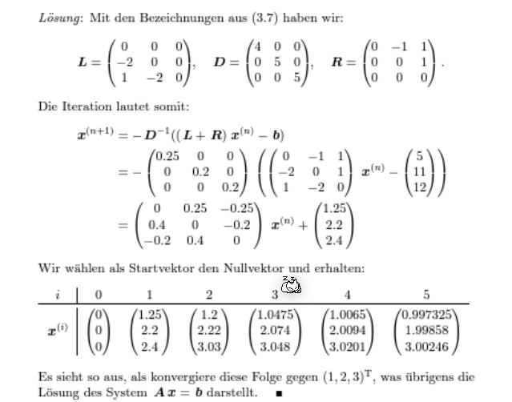

Lineare Gleichungssysteme
Definitionen
-
Untere Dreiecksmatrix Eine \(n\times n\)-Matrix \(L=(l_{ij})\) für welche gilt \(l_{ij}=0\) für \(j > i\). Sie ist normiert, wenn \(l_{ii}=1\) gilt

-
Obere Dreiecksmatrix
Eine \(n\times n\)-Matrix \(L=(l_{ij})\) für welche gilt \(l_{ij}=0\) für \(i > j\). Sie ist normiert, wenn \(l_{ii}=1\) gilt

Gaus-Algorithmus
Siehe 22FS/LA/01_Lineare Gleichungssysteme.md
Fehlerfortpflanzung und Pivotisierung
Beim "normalen" Gaus wird bei jeder Zeile mit \(\lambda=\frac{a_{ji}}{a_{ii}}\) multipliziert, was zu grossen Rundungsfehlern führen kann. Um dies zu vermeiden, wird für jeden Schritt \(i\) zwei Zeile getauscht, dass die grösste Zahl in der \(i\)-ten Spalte bei \(a_{ii}\) ist.
Im folgende Beispiel wird \(A\) pivotisiert: $$ A=\begin{pmatrix} 1 & 2 & -1\ 4 & -2 & 6 \ 3 & 1 & 0 \ \end{pmatrix} \xrightarrow{z_1 \leftrightarrow z_2} \begin{pmatrix} 4 & -2 & 6 \ 1 & 2 & -1\ 3 & 1 & 0 \ \end{pmatrix} \rightarrow \begin{pmatrix} 4 & -2 & 6 \ 0 & 2.5 & -2.5 \ 0 & 2.5 & -4.5 \ \end{pmatrix} \rightarrow \begin{pmatrix} 4 & -2 & 6 \ 0 & 2.5 & -2.5 \ 0 & 0 & -2 \ \end{pmatrix} $$
LR-Zerlegung
Für die LR-Zerlegung wird die Gleichung \(Ax=b\) umgestellt: $$ \underbrace{A}_{LR}x=b\ L\underbrace{R\cdot x}_y=b\ Ly=b\ Rx=y $$
Die \(L\) und \(R\) Matrizen sind die untere-, bzw. obere Dreiecksmatrize von \(A\): $$ L=\begin{pmatrix} 1 & 0 & 0 & 0\ l_{21} & 1& 0 & 0 \ l_{31} & l_{32} & 1 & 0\ l_{41} & l_{42} & l_{4_3} & 1\ \end{pmatrix} R=\begin{pmatrix} r_{11} & r_{12} & r_{13} & r_{14}\ 0 & r_{22} & r_{23} & r_{24} \ 0 & 0 & r_{33} & r_{34}\ 0 & 0 & 0& r_{44}\ \end{pmatrix} $$ Dabei wird \(R\), wie gewohnt, mit dem Gauss-Algorithmus gebildet. Dabei sind die \(\lambda_{ji}\) aus \(z_j:=z_j - \lambda_{ji}\cdot z_i\) gerade \(l_{ji}=\lambda_{ji}\).
Beispiel: $$ \begin{align} A=\begin{pmatrix} -1 & 1 & 1 \ 1 & -3 & -2 \ 5 & 1 & 4 \ \end{pmatrix}\ \xrightarrow{z_2 := z_2 - \frac 1 {-1}\cdot z_1 \Rightarrow \lambda_21=\frac{1}{-1}} \begin{pmatrix} -1 & 1 & 1 \ 0 & -2 & -1 \ 5 & 1 & 4 \ \end{pmatrix} \ \xrightarrow{z_3 := z_3 - \frac 5 {-1}\cdot z_1\Rightarrow \lambda_31=\frac{5}{-1}} \begin{pmatrix} -1 & 1 & 1 \ 0 & -2 & -1 \ 0 & 6 & 9 \ \end{pmatrix} \ \xrightarrow{z_3 := z_3 - \frac 6 {-2}\cdot z_2\Rightarrow \lambda_32=\frac{6}{-2}} \begin{pmatrix} -1 & 1 & 1 \ 0 & -2 & -1 \ 0 & 0 & 6 \ \end{pmatrix}\ L=\begin{pmatrix} 1 & 0 & 0 \ \frac{1}{-1} & 1 & 0 \ \frac 5 {-1} & \frac{6}{-2} & 1 \ \end{pmatrix} \end{align} $$
U m nun nach \(x\) aufzulösen wird folgendes gerechnet:
- Das Gleichungssystem \(Ly=b\) wird durch Vorwärtseinsetzen nach \(y\) aufgelöst.
- Im Gleichungssystem \(Rx=y\) wird nun \(y\) eingesetzt und mit Vorwärtseinsetzten nach \(x\) gelöst.
Zeilenvertauschung
Wenn Zeilen vertauscht werden, muss die Permutationsmatrix \(P\) berechnet werden. Für jede Vertauschung wird die Matrix \(P_i\) erstellt. Alle \(P_i\) Matrix werden dann zu der Permutationsmatrix zusammen gerechnet: \(P=P_n\cdot P_{n-1} \cdot ... \cdot P_1\)
Das Gleichungssystem wird nun zu: $$ \begin{align} PAx&=Pb\ LRx&=Pb\ Ly&=Pb\ Rx&=y \end{align} $$ Achtung: Bei Zeilenvertauschung werden auch die Zeilen in \(L\) vertauscht.
QR-Zerlegung
Der Gedanke ist, dass eine Orthogonalmatrix \(Q\) gefunden wird, für welche gilt \(QR=A\). Dabei ist \(R\) eine obere Dreiecksmatrix. Danach kann \(Rx=Q^Tb\) einfach gelöst werden.
Um \(Q\) zu berechne wird die die Householder-Matrix \(H\) für jede Spalte schrittweise berechnet, so dass gilt: $$ H_1\cdot A =H_1\cdot \begin{pmatrix} * & * & * & \ * & * & * & \ * & * & * & \ * & * & * & \ \end{pmatrix} = \begin{pmatrix} * & * & * & \ 0 & * & * & \ 0 & * & * & \ 0 & * & * & \ \end{pmatrix} $$ Dies wird erreicht, in dem folgendes gerechnet wird: $$ \DeclareMathOperator{\sign}{sign}
\sign(x)= \left { \begin{array}{ll} +1 & \text{für } x \ge 0\ -1 & \text{für } x < 0 \end{array} \right . \ \ \begin{align} a_1=&\begin{pmatrix}a_{11}\a_{21}\a_{31}\a_{41}\end{pmatrix}\ e_1=&\begin{pmatrix}1 \ 0 \ 0 \ 0 \end{pmatrix}\ v_1 :=& a_1 + \sign(a_{11})\cdot |a_1|\cdot e_1\ u_1 :=& \frac 1 {|v_1|}\cdot v_1\ H_1 :=& I_4 - 2\cdot u_1 \cdot u_1^T\ Q_1 =& H_1 \end{align} $$ Nun ist \(Q_1\) berechnet. Dasselbe wird nun für \(Q_2\) wiederholt, aber mit \(A_2\): $$ \begin{align} H_1\cdot A =& \left ( \begin{array}{c|ccc} * & * & * & *\ \hline 0 \ 0 & & A_2\ 0 \ \end{array} \right ) \ a_2=&\begin{pmatrix}a_{22}\a_{32}\a_{42}\end{pmatrix}\ e_2=&\begin{pmatrix}1 \ 0 \ 0 \end{pmatrix}\ v_2 :=& a_2 + \sign(a_{22})\cdot |a_2|\cdot e_2\ u_2 :=& \frac 1 {|v_2|}\cdot v_2\ H_2 :=& I_3 - 2\cdot u_2 \cdot u_2^T\ Q_2 =& \left ( \begin{array}{c|ccc} 1 & 0 & 0 & 0\ \hline 0 \ 0 & & H_2\ 0 \ \end{array} \right ) \end{align} $$ Dies nun für \(Q_3\) wiederholt.
Danach ergibt sich: $$ \underbrace{Q_4\cdot Q_3 \cdot Q_2 \cdot Q_1}_{Q^{-1}}\cdot A=\begin{pmatrix} * & * & * & * \ 0 & * & * & * \ 0 & 0 & * & * \ 0 & 0 & 0 & * \ \end{pmatrix}\ Q = (Q_3 \cdot Q_2 \cdot Q_1)^{-1}=Q_1^{-1}\cdot Q_2^{-1} \cdot Q_3^{-1}=Q_1^T\cdot Q_2^T \cdot Q_3^T $$
Orthoggonalmatrix
Dafür eine Matrix eine Orthogonalmatrix ist, muss folgendes gelten: $$ Q^T\cdot Q=I \Leftrightarrow Q^T = Q^{-1} $$
Householder-Matrix Beispiel
Vektornorm
Es gibt mehrere Normen für Vektoren, welche diese Definition erfüllt:
- Erste-Norm, Summennorm: \(||\vec x||_1=\sum^n_{i=1}|x_i|\)
- Zweite-Norm - Euklidischenorm: \(||\vec x||_2=\sqrt{\sum^n_{i=1}x^2}\)
- \(\infty\)-Norm - Maximumnorm: \(||\vec x||_\infty=\max_{i=1,...,n}|x_i|\)
Ebenfalls gibt es mehrere Normen für Matrixen:
- Erste-Norm, Spaltensummennorm: \(||A||_1=\max_{j=1, ..., n}\sum^n_{i=1}|a_{ij}|\)
- Zweite-Norm: Spektralnorm: \(||A||_2=\sqrt {(\rho(A^TA))}\)
- \(\infty\)-Norm: Zeilensummennorm: \(||A||_\infty=\max_{i=1,..n}\sum^n_{j=1} |a_{ij}|\)
Fehlerrechnungen
Ein gestörtes Gleichunssystem kann folgendermassen definiert werden als \(A\tilde x=\tilde b = b + \Delta b\) . Dabei ist \(\Delta b\) das Residuum oder Defekt und \(\Delta x = \tilde x - x\) den Fehler.
Für den absoluten und relativen Fehler gilt nun folgendes: $$ \begin{align} ||x - \tilde x|| &\le || A^{-1} || \cdot || b - \tilde b || \ \frac {||x - \tilde x||}{||x||} &\le ||A|| \cdot || A^{-1} || \cdot \frac{|| b - \tilde b ||}{||b||} \ \ \DeclareMathOperator{\cond}{cond} \cond(A)&=||A|| \cdot || A^{-1} || \end{align} $$ Wenn \(\cond(A)\) gross ist, können kleine Fehler in \(\vec b\) zu grossen Rundungsfehler im Ergebnis \(\vec x\) führen. Die Matrix \(A\) ist dann schlecht Konditioniert.
Wenn nicht nur \(\vec b\) sonder auch \(A\) einen Fehler enthaltet, dann gelten die folgenden Formeln: $$ \begin{align} &\text{Wenn } \cond(A) \cdot \frac{||A - \tilde >||}{||A||} < 1 \text{ dann gilt:}\ &\frac {||x - \tilde x||}{||x||} \le \frac{\cond(A)}{1- \cond(A) \cdot \frac{||A - \tilde A||}{||A||}} \cdot \left( \frac{|| A - \tilde A ||}{||A||} + \frac{|| b - \tilde b ||}{||b||}\right) \end{align} $$
Iterative Verfahren
Jacobi Verfahren
Die Gleichung \(Ax=b\) soll in \((L + D + R)x=b\) umgewandlet werden.

Danach sagt das Verfahren vor: $$ x^{(k+1)}=-D^{-1}(L + R)x^{(k)}+D^{-1}b\ \text{oder in der Summenform:}\ x_i^{(k+1)}=\frac 1{a_{ii}}\cdot\left(b_i - \sum^n_{j_1, j \neq i}a_{ij}x_j^{(k)}\right)\ \text{Dabei ist } i \text{ die Zeile in der Matrix} $$
Notiz: Eine Diagonalmatrix (wie \(D\)) zu invertieren ist trivial: $$ D=\pmatrix{2 & 0\ 0 & 5} \to D^{-1}=\pmatrix{\frac 1 2 & 0 \ 0 & \frac 1 5} $$
Beispiel - Jacobi-Verfahren

Gaus-Seidel-Verfahren
Konvergenz
Mit der folgenden Fixpunktiteration \(x^{(k+1)}=Bx^{(n)}+c\) ist die Konvergenz definiert als:
- \(\overline x\) ist anziehend, wenn \(||B|| < 1\)
- \(\overline x\) ist abstossend, wenn \(||B|| > 1\)
Für Jacobi-Verfahren ist \(B\) und \(c\) folgendermassen definiert: \(x^{(k+1)}=-\underbrace{D^{-1}(L + R)}_B\cdot x^{(k)}+\underbrace{D^{-1}}_c \cdot b\)
Für das Gaus-Seidel-Verfahren ist \(B\) und \(c\) definiert als: \(x^{(k+1)}=\underbrace{-(D+L)^{-1}R}_B\cdot x^{(k)}+\underbrace{(D+L)^{-1}}_c \cdot b\)
\(\overline x\) ist ebenfalls anziehend, wenn \(\rho(B)<1\) ist (\(\rho(B)\) ist der Spektralradius von \(B\)).
Abschätzung
Diagonaldominanz
Eine Matrix wird als Diagonaldominanz bezeichnet, wenn entweder
- für alli \(i=1,...,n\): \(|a_{ii}|> \sum^n_{j=1, j\neq i}|a_{ij}|\)
- für alli \(j=1,...,n\): \(|a_{jj}|> \sum^n_{i=1, i\neq j}|a_{ij}|\)